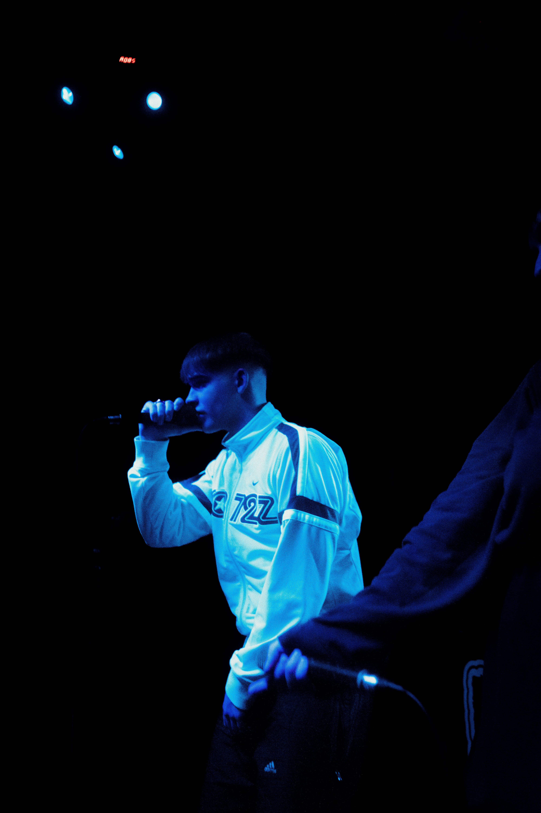

|
Este tema surgió como proyecto solamente hecho por amigos, en el propio videoclip aparecen varios de los partícipes en el proceso. De ahí el nombre de la canción, "687" que representa a todos los que forman parte de esto. |
Este otro tema trata temas personales, una relación amorosa que con el tiempo se degradó lo que dió lugar a este proyecto. Aclaración: El audio implícito no es en ningún momento la persona real, es solo una imitación. |
Este fue el primer tema serio que hice y el más significativo para mi ya que dio pie a una nueva etapa de mi vida que a día de hoy va a más. Personalmente es a la que más aprecio le tengo ya que fue de mis primeras experiencias. |
Sobre mí
|
Simón Blanco Marchal, conocido en el ámbito musical como Semon, es un joven prometedor de Úbeda, una ciudad con un rico patrimonio histórico en la provincia de Jaén, España. Actualmente en su segundo año de Bachillerato, Simón combina su educación con una creciente pasión por la música. Desde temprana edad, mostró un interés innato en la música, lo que lo llevó a adoptar su nombre artístico, reflejando su compromiso y conexión personal con su arte. Aunque todavía está en las etapas iniciales de su carrera musical, Semon ha comenzado a hacerse un nombre, creando piezas que capturan emociones y su visión única. Además de su amor por la música, disfruta de su tiempo libre jugando videojuegos, una actividad que encuentra relajante y entretenida, permitiéndole desconectar y divertirse tras sus sesiones de estudio y creación musical. |
 |

|

|